Die Reise-Blogs von Asien Special Tours
Unsere Reisespezialisten sind ständig für Sie unterwegs. In den Reise-Blogs unsere Reise-Homepages informieren wir Sie sehr gerne über Aktuelles und Unterhaltsames aus den vielen Reiseländern von Asien Special Tours und den Schwesterfirmen Africa Royal Tours und América Special Tours.
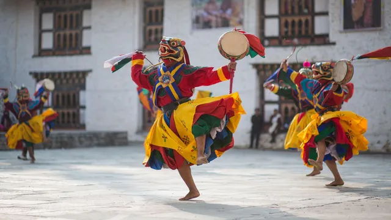
Reise-Blog Bhutan
Reise-Blog Bhutan besuchen ↗Reise-Blog China
Reise-Blog China besuchen ↗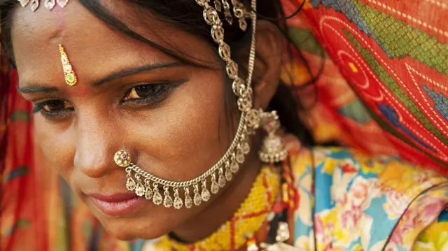
Reise-Blog Indien
Reise-Blog Indien besuchen ↗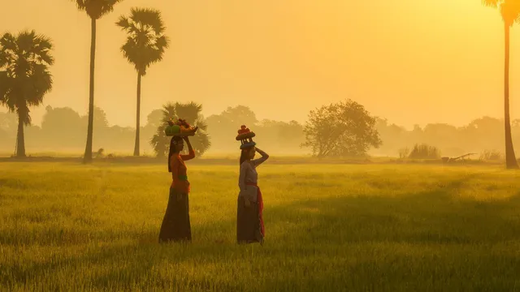
Reise-Blog Indonesien
Reise-Blog Indonesien besuchen ↗Reise-Blog Japan
Reise-Blog Japan besuchen ↗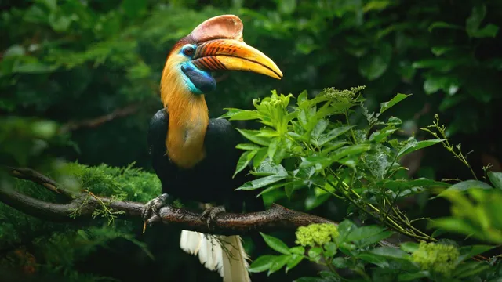
Reise-Blog Malaysia
Reise-Blog Malaysia besuchen ↗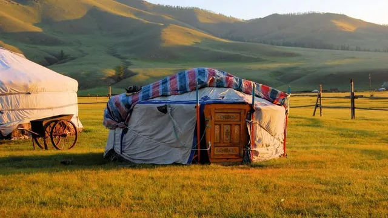
Reise-Blog Mongolei
Reise-Blog Mongolei besuchen ↗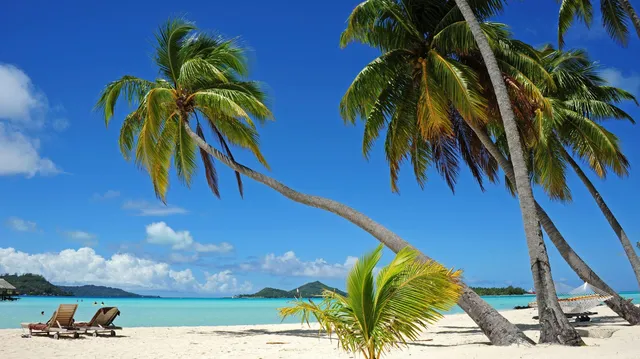
Reise-Blog Ozeanien
Reise-Blog Ozeanien besuchen ↗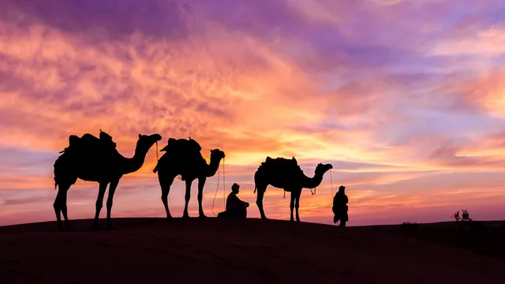
Reise-Blog Seidenstraße
Reise-Blog Seidenstraße besuchen ↗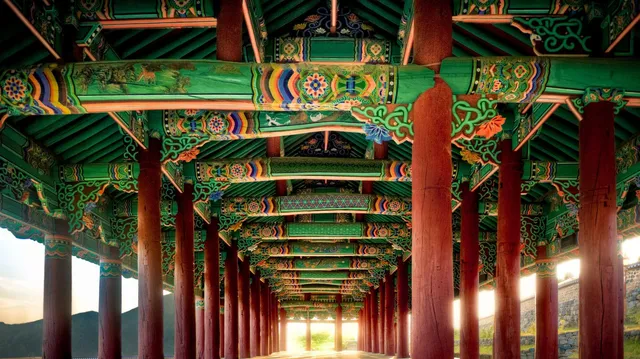
Reise-Blog Südkorea
Reise-Blog Südkorea besuchen ↗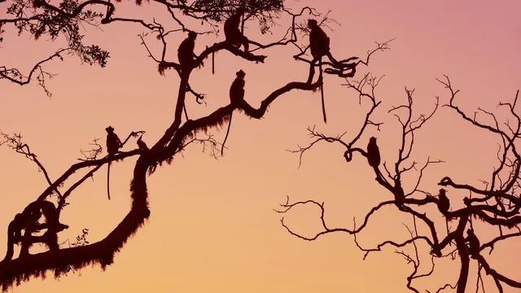
Reise-Blog Sri Lanka
Reise-Blog Sri Lanka besuchen ↗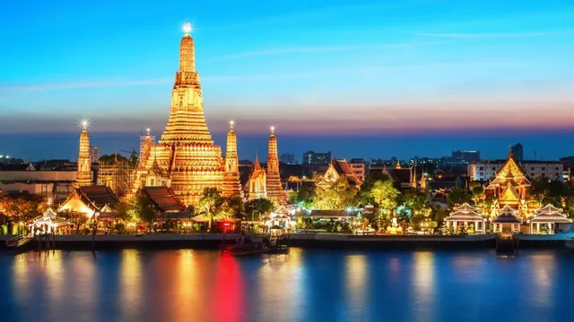
Reise-Blog Thailand
Reise-Blog Thailand besuchen ↗Reise-Blog Vietnam
Reise-Blog Vietnam besuchen ↗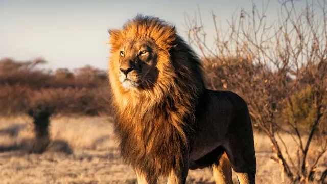
Reise-Blog Afrika
Reise-Blog Afrika besuchen ↗Reise-Blog Lateinamerika
Reise-Blog Lateinamerika besuchen ↗Ihre Reise persönlich planen
Wir stimmen Route, Unterkünfte und Reisedaten persönlich mit Ihnen ab.
Persönliche Beratung anfragen ↗